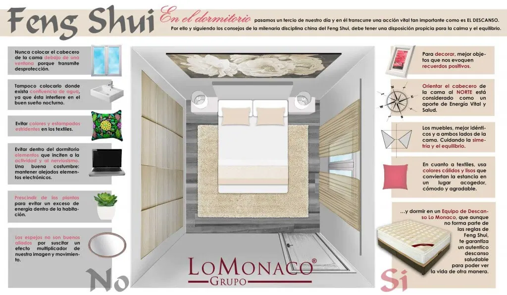
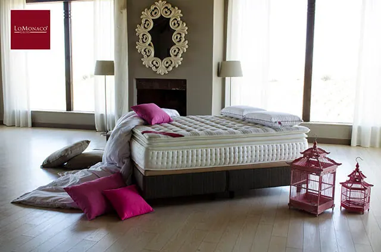

¿Necesitas mejorar el Feng Shui de tu dormitorio?
¿Necesitas mejorar el Feng Shui de tu dormitorio?
El Feng Shui, cuya traducción literal significa “agua y viento”, es el nombre que recibe una ancestral ciencia china centrada en el estudio de las líneas de energía. Según esta doctrina, a nuestro alrededor hay líneas de energía positiva y negativa, de modo que debemos colocar con cuidado nuestros espacios vitales para fortalecer los influjos positivos y evitar aquellos otros contrarios a nuestro bienestar.
Teniendo en cuenta esto, es importante atender a cuestiones como la orientación de la cama Feng Shui y otros aspectos relacionados con el dormitorio.

Responde con sinceridad estas preguntas sobre Feng Shui y cama:
- ¿Hay algún espejo junto a tu cama?
- ¿Adornas con flores tu mesilla de noche?
- ¿Duermes con tu pareja en una cama doble con colchones independientes?
- ¿Tienes un aparato de televisión frente a la cama?
- ¿En tu armario no cabe ni una prenda de ropa más?
Si has contestado que sí a cualquiera de estas preguntas, tu dormitorio no respeta las normas fundamentales de Feng Shui para ser un lugar de auténtico descanso y sueño reparador. En Grupo Lo Monaco queremos ayudarte a mejorar estas condiciones, por eso no dejes de prestar atención a nuestros consejos, en ellos te explicaremos cómo lograr un buen Feng Shui en tu dormitorio.

¿Qué es el Feng Shui?
Los distintos espacios de nuestra vida cotidiana: el hogar, el lugar de trabajo, deben tener un buen Feng Shui, es decir, una situación óptima en la que todo nos transmita calma, paz y equilibrio. De este modo, en una casa que goce de buen Feng Shui podremos sentirnos a gusto, disfrutaremos de buena salud y gozaremos de prosperidad. Para ello, debemos buscar el equilibrio y armonizar el mundo exterior con nuestro propio mundo interior.
El dormitorio perfecto
El dormitorio es uno de los lugares fundamentales en nuestra vida. Es el espacio del sueño, del descanso, de la reflexión, de la convivencia y, cómo no, del sexo. Un territorio íntimo que compartimos con nuestra pareja o en el que refugiamos nuestra soledad. Por eso es uno de los lugares donde más debemos cuidar la armonía y el equilibrio.
Un dormitorio con un buen Feng Shui nos permitirá despertarnos mucho más descansados, en paz con nosotros mismos y, sobre todo, con vitalismo suficiente para afrontar el nuevo día.

La cama, el centro del dormitorio.
Cómo debo orientar la cama según el Feng Shui
La cama es el mueble que debe gobernar el dormitorio. Todo tiene que disponerse en torno a ella, guardando las proporciones y distancias justas. Es por esto que es muy importante determinar dónde poner la cama según el Feng Shui, así como la orientación de la cama según los puntos cardinales.
En primer lugar, a la hora de orientar el cabecero para colocar la cama según el Feng Shui hay que tener en cuenta que aquello que veamos desde la cama será siempre lo último y lo primero que retengamos en nuestra retina. Cuanto más caótica sea esa imagen, de menor calidad será nuestro descanso. Cuanto más armónica sea esa percepción, mayor placidez nos ofrecerá.
Por este motivo, la cama no debe dar a la puerta del baño ni a un pasillo abierto, si es posible, es conveniente que tampoco esté situada de frente a la puerta. En caso de que sea inevitable, siempre se pueden usar cortinas o biombos para marcar una separación y aislar la cama del pasillo. Lo ideal, no obstante, es que la cama se encuentre alejada de la puerta.
Tampoco es aconsejable colocar la cama bajo una ventana; esto nos transmitirá sensaciones de desprotección-. Tampoco debe estar bajo un depósito de agua. Las paredes con cañerías estimulan la energía vital (o chi) y, por tanto, interfieren en el descanso y favorecen el insomnio.
Por último, no debemos colocar la cama cerca de una viga, ya que estos elementos aportan una sensación de carga que acaba siendo un mal augurio, pues las vigas reflejan el peso moral, laboral, mental…- que cae sobre nuestros hombros.

Orientación de la cama: puntos cardinales.
Todas las orientaciones geográficas son favorables si se cuida el conjunto del dormitorio. Es importante disponer de luz natural. Aún así, cada disposición posee su propio significado, y es importante conocerla para determinar la posición de la cama respecto a los puntos cardinales:
- Una cama orientada al sur fortalece la intuición y estimula los sueños y la capacidad de retención.
- Una cama orientada al norte favorece la salud y la energía vital.
- Una cama orientada al este provoca dinamismo y ganas de vivir.
- Una cama orientada al oeste constituye un buen mecanismo contra el estrés y la agitación.
Dependiendo de tus necesidades, puedes optar por colocar la cabecera de la cama y por lo tanto la almohada en cualquiera de estos cuatro puntos cardinales. para optimizar el Feng Shui del dormitorio y la orientación de la cama.
Malas compañías. Qué es lo que nunca debes colocar en tu dormitorio.
Para cuidar el descanso y la tranquilidad, el dormitorio nunca debe albergar muebles u objetos que perturben tu sueño. Situar junto a la cama un escritorio, un ordenador personal o un banco de gimnasia es un modo de favorecer el nerviosismo y la inquietud. El ordenador y el escritorio nos recordarán lo que nos queda por hacer en nuestro trabajo diario. El banco de gimnasia será, a su vez, un incómodo recordatorio del ejercicio físico que no hemos hecho. En general los aparatos electrónicos no son recomendables en la zona de descanso.
Buenas compañías. Lo mejor para tu dormitorio según el Feng Shui
Frente a la relación -abocada al fracaso- entre el ordenador y la cama, podemos encontrar otros muebles cómplices para nuestro dormitorio. Los sofás, los divanes y las sillas de lectura son compatibles con nuestra cama, pues todos ellos inciden en las mismas ideas: la comodidad y el descanso.
En este caso, la armonía y el Feng Shui nacen de la uniformidad y la coherencia. El mobiliario debe sugerir un mismo placer y una sugerente intimidad.

Sábanas y ropa de cama para el Feng Shui
Elegir las sábanas y el edredón tampoco es una cuestión insignificante. Los estampados fuertes o excesivamente agresivos tampoco permiten dotar al dormitorio de la calidez necesaria para sentirnos convenientemente arropados. En general, son recomendables los colores neutros, así como los materiales naturales, para disfrutar de un sueño profundo.
La ropa de cama debe tener colores cálidos y preferentemente planos, tonos lisos y suaves que nos abriguen a través de nuestra percepción visual. Según el Feng Shui, la suma de los colores y un tacto agradable hará de nuestra cama un lugar apetecible y, en el caso de la vida en pareja, un entorno tierno y acogedor.
Dormitorio en pareja para el Feng Shui
El dormitorio no sólo es el lugar donde descansamos sino, en gran medida, el centro de nuestra vida en pareja. Noches compartidas en las que la conversación, la sensualidad, el abrazo cómplice o el silencio a medias preludia el sueño y el amanecer conjunto. La armonía de la pareja puede verse favorecida por el Feng Shui siempre que se tengan en cuenta algunos de los siguientes consejos:
Cama doble y Feng Shui
Dormir en una cama doble pero sobre colchones separados no es una medida acertada. La separación de colchones puede acabar convirtiéndose en algo simbólico, ya que introduce un elemento físico de desunión.
Un reparto proporcional
Tampoco debes descuidar las diferencias que, inconscientemente, puedas establecer dentro de tu dormitorio. Es necesario asegurarse de que hay mesillas de noche y lámparas idénticas a ambos lados de la cama, además, se debe procurar que el espacio libre entre las mesitas y la cama sea igual en los dos extremos. Igualdad, proporción, equidad y simetría. Las normas para que una pareja funcione son las mismas que debe respetar la decoración de tu dormitorio.
¿Espejos o voyeurs?
En el dormitorio tampoco debemos colocar espejos a la vista. En primer lugar, los espejos activan nuestros sentidos y, por tanto, dificultan el sueño y favorecen el insomnio. La multiplicación de la imagen y su movimiento constituye un foco de distracción que no nos permitirá descansar bien. Además, en el Feng Shui se considera que el espejo puede llegar a representar la intromisión de una tercera persona que ejerce de voyeur impertinente en la vida de la pareja. Los espejos, por tanto, tienen que hallarse dentro del armario (en una de sus puertas) o, en su defecto, podemos usar velos o cortinas de colores suaves para dejarlos visibles durante el día y taparlos con estas telas durante la noche.
Televisión en el dormitorio para el Feng Shui
Disponer de un aparato de televisión frente a la cama es, sin duda, uno de los elementos que más perjudican el Feng Shui de nuestro dormitorio. La velocidad de sus imágenes altera el descanso y constituye, además, un sustituto peligroso de la reflexión íntima o en pareja a la que deben invitar los instantes anteriores al sueño. La lectura, la escritura de un diario íntimo o el pensamiento sobre lo acaecido en el día son técnicas mucho más eficaces de conciliar un sueño tranquilo y reparador. Además, en la vida en pareja, es necesario que el entorno favorezca la sensualidad y el contacto físico. La televisión introduce un componente de extrañeza y lejanía que interrumpe la comunicación corporal e íntima.
El Feng Shui y el armario
La cama no es el único mueble de nuestro dormitorio. Pese a la clara primacía de equipo de descanso (en Grupo lo Monaco lo constatamos), no podemos olvidar la presencia de otro mueble fundamental en nuestro cuarto: el armario.
A la hora de elegir un armario hemos de evitar muebles con bordes excesivamente puntiagudos. Los picos y salientes son elementos que enturbian la armonía decorativa, es mucho más aconsejable optar por armarios de bordes redondeados y de sencillo diseño. Esto mismo puede aplicarse a las mesillas de noche y a la cómoda, además, se debe evitar colocar muebles demasiado altos cerca de la cama.
Los cajones de nuestro dormitorio mejor ordenados
En ocasiones, la acumulación de ropa en armarios y cajones acaba dando lugar a rincones atestados de prendas donde ni siquiera somos capaces de encontrar lo que buscamos. La sensación de desorden resulta muy desestabilizadora, especialmente si tenemos en cuenta que hemos de abrir el armario cada mañana antes de salir a la calle. No sólo hemos de ordenar los armarios tanto como sea posible sino que es aconsejable prescindir de aquello que no vayamos a usar. El Feng Shui cree en el equilibrio, de modo que eliminar lo que no nos interesa permitirá generar espacio para que llegue a nuestra vida algo que sí nos sea de utilidad.
Objetos y recuerdos
Con frecuencia, coleccionamos demasiados objetos en nuestro dormitorio. Todos ellos tienen que estar conectados con nuestros buenos recuerdos si queremos que la energía que desprendan sea positiva. Objetos de nuestra vida laboral o recordatorios de asuntos pendientes resultarán nefastos para nuestro descanso, al igual que todo elemento que evoque un asunto desagradable o de recuerdo triste.
En definitiva, para conseguir un buen Feng Shui en tu dormitorio debes…
Como hemos visto, para conseguir un buen Feng Shui en nuestro dormitorio no necesitamos una brújula, ni un cuarto de excepcionales dimensiones, ni tan siquiera un extenso manual para ajustar nuestro espacio a una compleja filosofía decorativa.Para conseguir un buen Feng Shui sólo debemos cuidar el equilibrio, la armonía y la proporción. La justa medida es un buen camino hacia el descanso.